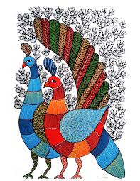
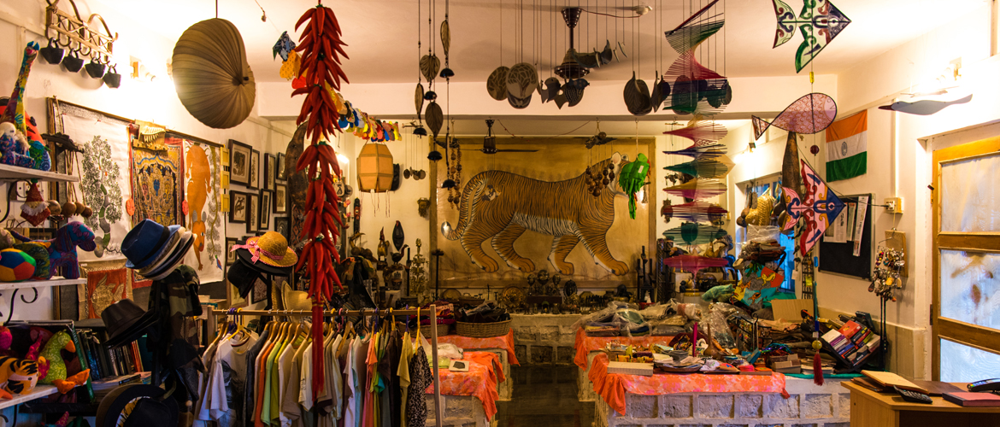
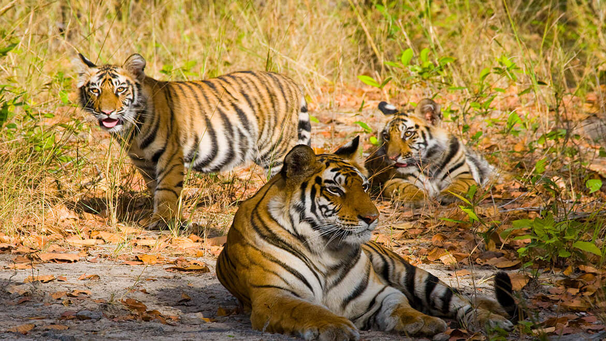
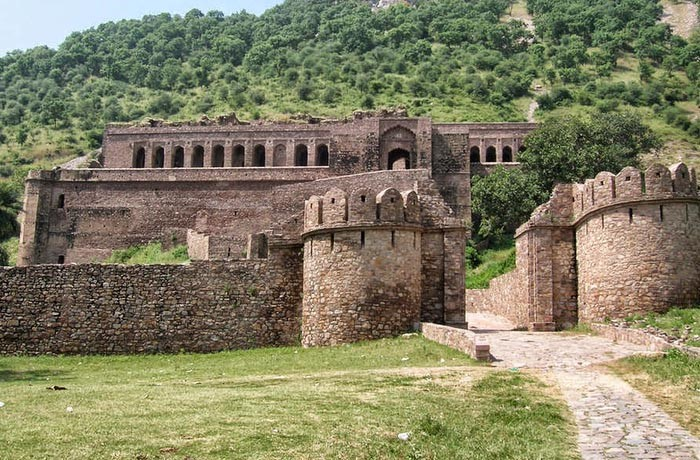
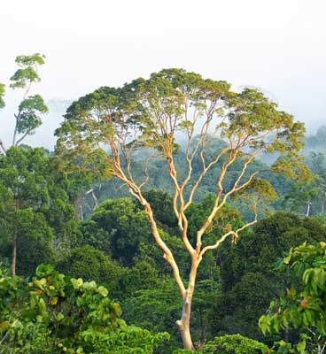
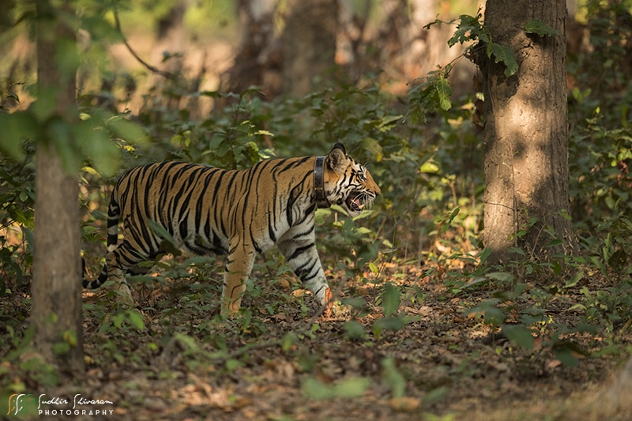
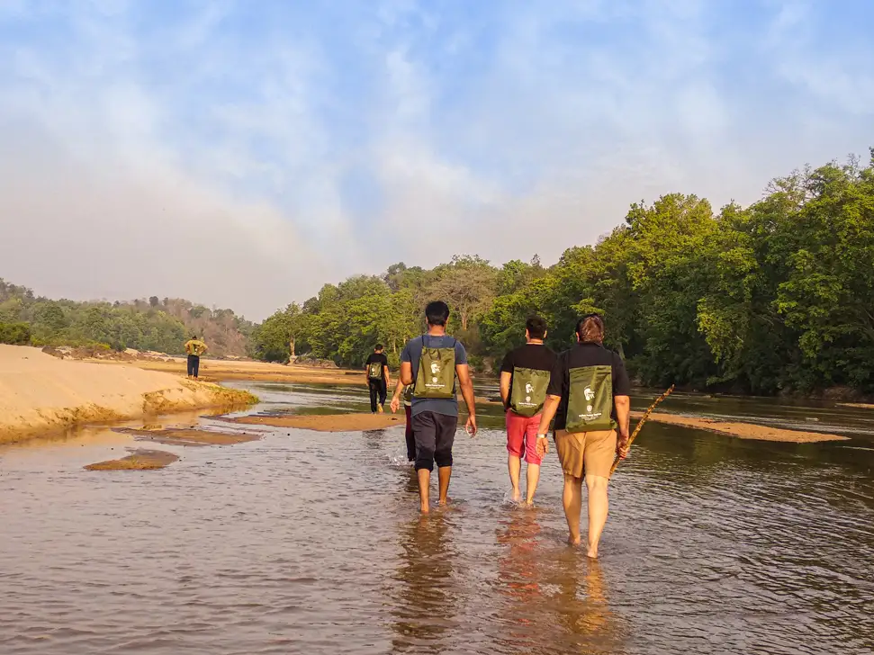

Permits & Safaris
Book Adventure
*Book at least 120 days in advance to secure Tala Zone permits.
Local Crafts
Authentic Souvenirs

Gond Paintings
गोंड पेंटिंग

Baiga Thali
बैगा थाली

Bamboo Craft
बांस शिल्प
Where ancient history meets the wild — home to the highest density of Royal Bengal Tigers in the world.
जहाँ प्राचीन इतिहास वन्यजीवों से मिलता है — विश्व में रॉयल बंगाल टाइगर्स का सबसे सघन आवास।
Start the Safari सफारी शुरू करेंSpread over the Vindhya hills, Bandhavgarh was the former hunting preserve of the Maharaja of Rewa. It is the birthplace of the world's first captive white tiger, Mohan.
विंध्य पहाड़ियों में फैला बांधवगढ़ कभी रीवा के महाराजा का निजी शिकारगाह था। यह दुनिया के पहले सफेद बाघ, मोहन, की जन्मभूमि है।
Today, it is a biodiversity hotspot featuring 37 mammal species and over 250 species of birds across its dramatic rocky terrain and sal forests.
आज यह 37 स्तनधारी प्रजातियों और 250 से अधिक पक्षी प्रजातियों का घर है, जो अपनी चट्टानी पहाड़ियों और साल के वनों के लिए प्रसिद्ध है।

The oldest and premium zone. It houses the 10th-century Shesh Shaiya (Lord Vishnu statue) and the path to the fort. Known for high tiger frequency and the scenic Charanganga origin.
सबसे पुराना और प्रीमियम ज़ोन। यहाँ 10वीं सदी की शेष शैया और किले का मार्ग है। यह बाघों की सघनता के लिए जाना जाता है।

Sitting atop a 811m hill, legends say Lord Rama gifted this fort to his brother Lakshmana. Requires prior forest office permission for the trek.
811 मीटर ऊँची पहाड़ी पर स्थित। मान्यता है कि भगवान राम ने इसे भाई लक्ष्मण को भेंट किया था।
Famous for its natural waterholes like Murdhawa and Sukhi Patiha. A mix of dense forests and open grasslands perfect for tracking big cats.
अपने प्राकृतिक जलकुंडों के लिए प्रसिद्ध। घने जंगलों और घास के मैदानों का अद्भुत मिश्रण।
Known for its bamboo forests and a resident herd of wild elephants. Also a paradise for birdwatchers.
बांस के वनों और जंगली हाथियों के झुंड के लिए प्रसिद्ध। पक्षी प्रेमियों के लिए स्वर्ग।
Umaria is just 33 km (~1 hr) from Tala. Katni (KTE) is 100 km away and better connected to North/West India.
Jabalpur Airport is 170 km (~4.5 hrs drive). Taxis are easily available from the airport to Tala gate.
*Book at least 120 days in advance to secure Tala Zone permits.




